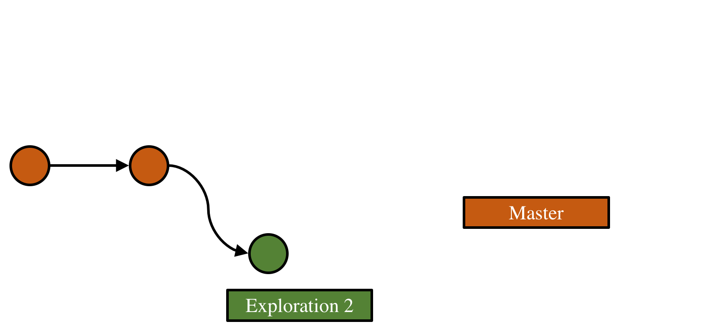

name: inverse layout: true class: center, middle, inverse --- # Travail collaboratif - Bonnes pratiques <hr /> .nolink[[Andréanne Beardsell](https://www.researchgate.net/profile/Andreanne_Beardsell)] <br /> .nolink[[Nicolas Casajus](http://ahasverus.github.io/)] <br /><br /><br /> <img src="img/logo-slack.png" style="width:100px; margin-left: 20px; margin-right: 20px;"></img> <img src="img/logo-git.png" style="width:225px; margin-left: 20px; margin-right: 20px;"></img> <img src="img/logo-github.png" style="width:150px; margin-left: 20px; margin-right: 20px;"></img> <br /> .ssmall[Présentation disponible en ligne :] <br /> <!-- .ssmall[[https://chaireBioNorth.github.io/labmeeting-20171124](https://chaireBioNorth.github.io/labmeeting-20171124)] --> .ssmall[[Lien pas encore actif](https://chaireBioNorth.github.io/labmeeting-20171124)] <br /> .ssmall[Réunion de laboratoire] <br /> .ssmall[Université du Québec à Rimouski] <br /> .ssmall[Vendredi 24 Novembre 2017] ??? pas de note --- layout: false ## Travail collaboratif <hr /><br /> * Texte... -- * Texte... --- name: inverse layout: true class: center, middle, inverse --- <img src="img/logo-slack-2.png" style="width:450px;"></img> --- layout: false ## Title <hr /><br /> * Texte... --- name: inverse layout: true class: center, middle, inverse --- <img src="img/logo-git.png" style="width:350px;"></img> --- layout: false ## Présentation de Git <hr /><br /> * Texte... --- layout: false ## Démarrage d'un projet Git <hr /><br /> </img> <br /><br /> ```bash $ mkdir monprojet/ # Création d'un nouveau dossier $ cd monprojet/ # Déplacement dans ce dossier $ git init # Initialisation d'un versioning $ ls -alH ``` --- layout: false ## Ajout de premier(s) fichier(s) <hr /> </img> <br /><br /> ```bash $ git add --all # Ajout des modifications à l'historique* $ git add *.txt # Ajout des modifications à l'historique* $ git add readme.txt # Ajout des modifications à l'historique* $ git commit -m "Mon 1er commit" # Engagement des modifs + Commentaire ``` --- layout: false ## Title <hr /> <img class="git" src="img/git-02.png"></img> <br /><br /> ```bash $ ``` --- layout: false ## Title <hr /> <img class="git" src="img/git-03.png"></img> <br /><br /> ```bash $ ``` --- layout: false ## Title <hr /> <img class="git" src="img/git-04.png"></img> <br /><br /> ```bash $ ``` --- layout: false ## Title <hr /> <img class="git" src="img/git-05.png"></img> <br /><br /> ```bash $ ``` --- layout: false ## Title <hr /> <img class="git" src="img/git-06.png"></img> <br /><br /> ```bash $ ``` --- layout: false ## Title <hr /> </img> <br /><br /> ```bash $ ``` --- layout: false ## Title <hr /> </img> <br /><br /> ```bash $ ``` --- layout: false ## Title <hr /> </img> <br /><br /> ```bash $ ``` --- layout: false ## Title <hr /> <img class="git" src="img/git-10.png"></img> <br /><br /> ```bash $ ``` --- layout: false ## Title <hr /> <img class="git" src="img/git-11.png"></img> <br /><br /> ```bash $ ``` --- layout: false ## Title <hr /> <img class="git" src="img/git-12.png"></img> <br /><br /> ```bash $ ``` --- layout: false ## Title <hr /> <img class="git" src="img/git-13.png"></img> <br /><br /> ```bash $ ``` --- layout: false ## Title <hr /> </img> <br /><br /> ```bash $ ``` --- layout: false ## Title <hr /> </img> <br /><br /> ```bash $ ``` --- layout: false ## Title <hr /> </img> <br /><br /> ```bash $ ``` --- layout: false ## Title <hr /> </img> <br /><br /> ```bash $ ``` --- layout: false ## Title <hr /> <img class="git" src="img/git-18.png"></img> <br /><br /> ```bash $ ``` --- layout: false ## Title <hr /> </img> <br /><br /> ```bash $ ``` --- layout: false ## Title <hr /><br /> </img> <br /><br /> ```bash $ ``` --- name: inverse layout: true class: center, middle, inverse --- <img src="img/logo-github-2.png" style="width:750px;"></img> --- layout: false ## Connexion à distance <hr /><br /> <img src="img/github-network.jpg" style="margin: 0 10%; width: 80%"></img> --- name: inverse layout: true class: center, middle, inverse --- <hr />